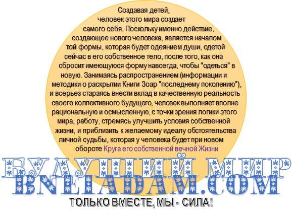

ТОЧКА НЕВОЗВРАТА🎧
(по мотивам переписки на форуме "Учения левой линии" КК ccastaneda.ru)
Думаю, что настало время выложить карты (которые были спрятаны "в рукаве" у Духа) на (Его, обеденный) стол. При всей своей непредвзятости и отрешенности, маги-рассказчики "линии новых видящих", в лице своего последнего представителя и посланника К. Кастанеды, скрыли от нас одну жизненно важную деталь процесса становления магом на Пути Человека Знания. Она касается того, как происходит процесс "перехода через точку невозврата" человека этого мира, или ученика магии (что одно и то же), для того, чтобы он мог стать "магом" и "видящим", частью "Мифа", посредством "включения в Правило". Данная деталь тщательно скрыта за витиеватыми формулировками и пространными описаниями "абстрактных ядер магических историй", так, что разглядеть ее "невооруженным взглядом" достаточно не просто. Это было сделано таким образом потому, что на момент происхождения обучения Кастанеды ДХ, в Мире не было "магического инструмента", позволяющего избежать человеку того, что было скрыто за иносказаниями. Сейчас он уже имеется, а значит, "скрывать" факты для нас становится не просто "не обязательно", а фактически недопустимо.
Напомню несколько фактов, изложенных КК посредством перепросмотра своего инструктажа ДХ во время ученичества.
- 1. У (нагваля Дона) Хулиана. "В этот миг женщина вдруг закричала, а у актера начались спазмы дыхания, нагваль увидел, как черная тень поразила актера, она была как кинжал, с точностью вошедшей в его зазор.", "Поэтому нагваль Элиас знал без каких-либо сомнений, что актер почти мертв, и смерть автоматически обрывала личный интерес мужчины к замыслам духа. Потом и его не осталось, смерть нивелировала все."
- 2. У (нагваля Дона) Хуана. "— То был не просто мой бенефактор, который наткнулся на меня, когда я умирал от пули, — объяснил он. — в тот день дух нашел меня и постучал в мою дверь. Мой бенефактор понимал, что он был здесь только проводником духа. Без вмешательства духа встреча с моим бенефактором ничего бы не значила."
- 3. У самого КК это был проигранный конфликт с неорганиками в одном из неорганических миров. Он тоже фактически умер, но был "реанимирован" Духом для конкретной Цели - донести до нас с Вами наследие "шаманов индейцев Яки". Играющее важное значение в дальнейшем синтезе всего со всем в наступавшую эпоху третьего тысячелетия3*3 Именно после этого случая Дону Хуану открылась "настоящая природа" КК, и что она "не соответствует по структуре" тому, кто должен был продолжить его линию, а способна только ее завершить….
- 4. Подобно ему в Мир неоргаников были закинуты ученики нагваля Розендо (по-моему так, я могу ошибаться, чьи именно), две молодых "половинки" нагваля, "занимавшиеся любовью в шкафу". И "чуть было там не погибли". Читай: погибли, и прошли через "воскресение" Орлом и Намерением Духа. Поменявшись до неузнаваемости ("после этого они никогда уже не были теми, кем были до этого" - КК).
И далее - везде! ЧЕЛОВЕК НЕ МОЖЕТ, НЕ УМЕРЕВ, Т.Е. НЕ ВЕРНУВ ЛИЧНУЮ ЖИЗНЕННУЮ СИЛУ ОРЛУ, ОСУЩЕСТВИТЬ МАНЕВР КОНТРОЛИРУЕМОГО ПРЫЖКА В ПРОПАСТЬ С ОБРЫВА. А ВЕРНУВ ЕЕ, ЕМУ НЕКУДА БУДЕТ ВОЗВРАЩАТЬСЯ, ПОТОМУ ЧТО НИКАКОГО "НАЗАД" У НЕГО УЖЕ НЕ БУДЕТ. НЕ ЗРЯ ЭТОТ ПЕРЕХОД НАЗЫВАЕТСЯ ТОЧКОЙ НЕВОЗВРАТА - POINT OF NO RETURNS.
Тот, кто "возвращается назад" в таких случаях - это уже совсем не тот человек, который "прыгал в пропасть". Это Намерение Духа, облаченное в момент смерти в оболочку этого человека, чтобы совершать конкретные практические действия, связанные с распространением Им Света Жизни Своим созданиям, т.е. производить в каждом поколении практические вехи эволюционного развития "линий магов", которые, в свою очередь, опосредуют собой таковое развитие в своем "общем Кли", из которого они вышли сами, и с которым неразрывно связаны посредством Правила и посредством фактического сосуществования в единой Великой Человеческой Полосе Эманаций. Орел СОЗДАЛ НАГВАЛЕЙ ИЗ НИЧЕГО. А не они "прыгнули в пропасть и стали другими". Он Сам стал "Жизненной Силой" и постановщиком Целей и Задач, "одетой" в физические тела, которые до "прыжка в пропасть" служили вместилищами для "учеников, которых звали так-то и так-то".
Единственный из всей линии "новых видящих", кто "знал тайну" о том, как, на самом деле, сохранять осознание и память о себе, длящиеся веками, не завершая при этом жизнь и существование, являлся (и является) основатель и первый нагваль их "линии магов". Его имя Шошопаншоко. В бытие женщиной, а в бытие мужчиной - Йеояда бен Иш Хай1*1 См. также: Мечтай!! (Would you do it with me;), Зеир Арихович Анпин, страница 70, сноска 110. Книга доступна. Его подход в самых общих чертах описан в "лекции" Кэрол Тиггс"2*2 Лекция Кэрол Тиггс в переводе доступна также и заключается в соединении с каждой новой ступенью нагвалей своей линии посредством "духовной половой любви". И полета на "Крыльях Намерения в Будущее" посредством этой энергии. Если вдруг не читали, или не помните, о чем и как конкретно писала Кэрол Тиггс, обязательно освяжите в памяти. Эта ее лекция имеет не меньшую ценность "здесь и сейчас", чем половина всего Кастанедовского "десятитомника".
Интересно?